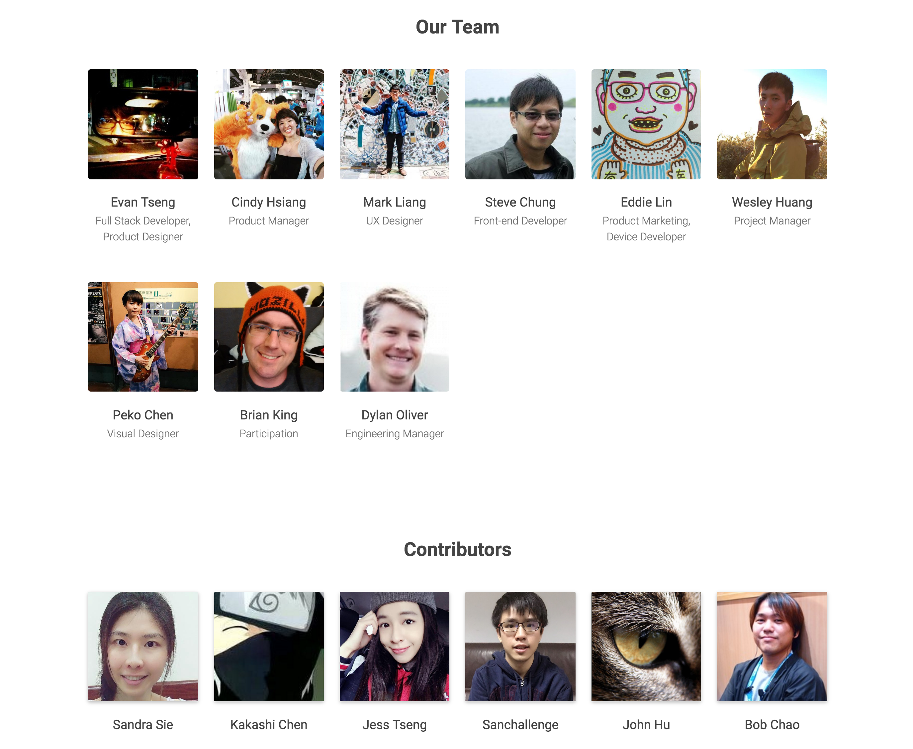

class: center, middle # Make SensorWeb People/Contributors Want ## Deliver Product x Learn x Contribute ### [SensorWeb Team](http://sensorweb.io/about.html) --- class: middle # SensorWeb Project Co-founders * [Cindy Hsiang](https://github.com/chsiang): Environment Data * [Eddie Lin](https://github.com/yshlin): [Project PM2.5](http://sensorweb.io/project.html) * [Evan Tseng](https://github.com/evanxd): [SensorWeb Plaftorm](http://sensorweb.io) --- class: middle, center  --- class: middle, center ``` var SensorWeb = GitHub(OpenData, IoT); ``` --- class: middle, center ### 物聯網世界中共享資料的 GitHub --- class: middle # 市場策略 * 全球的國民小學 * 全球的開發者與自造者社群 --- class: middle, center # 為什麼是小學？ --- class: middle, center ### 因為小朋友是國家未來的主人翁啊！  --- class: middle # 兩個 Milestones ### 3/10 開始寫 code ### 4/18 Release Pre-alpha ### 4/25 交付 SensorWeb 給一間小學了 ### （4/25 - 3/10 = 45 天，想要逼死誰啊XD） --- class: middle, center  --- class: middle, center  --- class: middle, center ### 黃祈霖，資訊組長  --- class: middle, center  --- class: middle, center  --- [](http://sensorweb.io/sensor.html?id=B1giofox) --- [](http://www.psees.tyc.edu.tw/) --- class: middle, center ### 我們怎麼用 45 天，寫程式碼並交付產品給一間 1200 人的學校？ --- class: middle, center ### 我們怎麼說服學校安裝的？ --- class: middle, center `// 我們不是來裝 Sensor 的，是來修學校的。` --- class: middle, center # 真相 ### 免費又好的東西誰不要！ --- class: middle, center ### 我們怎麼在 45 天，開發一個可以交付給學校的產品？ --- class: middle, center # AGILE? --- class: middle, center # 坦白說， # 我們不是典型的 AGILE --- class: middle, center # Emotional Commitment Working Model (ECWM) --- class: middle, center  --- class: middle # 每日成語 ## 壯士斷腕 ### 指勇士手腕被蝮蛇咬傷，就立即截斷，以免毒性擴散全身。比喻作事要當機立斷，不可遲疑、姑息。 --- class: middle # ECWM ### 一個團隊對其使命與產品有了情感上的承諾，在專案開發中以接近壯士斷腕的精神全力開發產品。 --- class: middle, center # ECWM 如何運作？ --- class: middle, center # 典型工作模式  --- class: middle, center # ECWM 工作模式  --- class: middle # 神奇的事情發生了 * 我們[全端工程師](http://githbu.com/evanxd)會把產品交付市場 * 我們 [UX 設計師](https://github.com/youwenliang)會寫 code 去改 layout * 我們[前端工程師](https://github.com/steveck-chung)會回應在社群網站上的使用者需求，他實作了 DAQI * 不及備載... --- class: middle # 技術架構 * Front-end: [SensorWeb](http://github.com/sensor-web/sensorweb-frontend), [Desktop App](http://github.com/evanxd/sensorweb-desktop), Web Widget * [Back-end]((http://github.com/evanxd/sensorweb-backend): Open Data Platform * Device: 支援 [Arduino](http://github.com/sensor-web/arduino-station)、[RPi](http://github.com/sensor-web/js-station) 和 [PC](http://github.com/sensor-web/js-station) --- class: middle, center # [DEMO](http://sensorweb.io) --- class: middle, center # 問題？